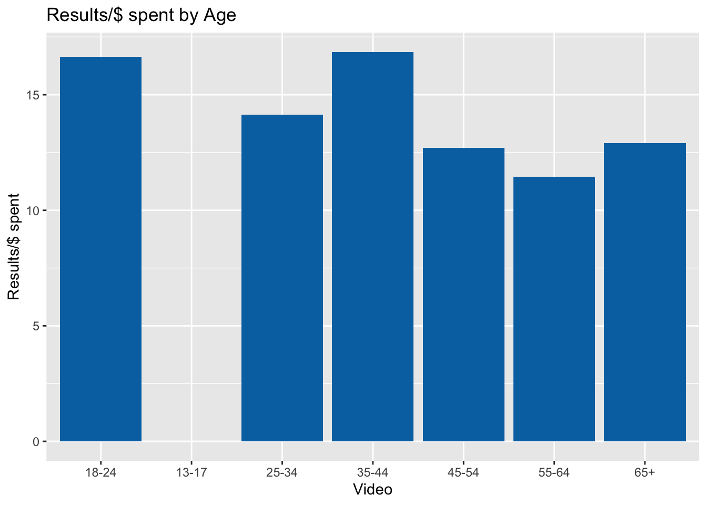
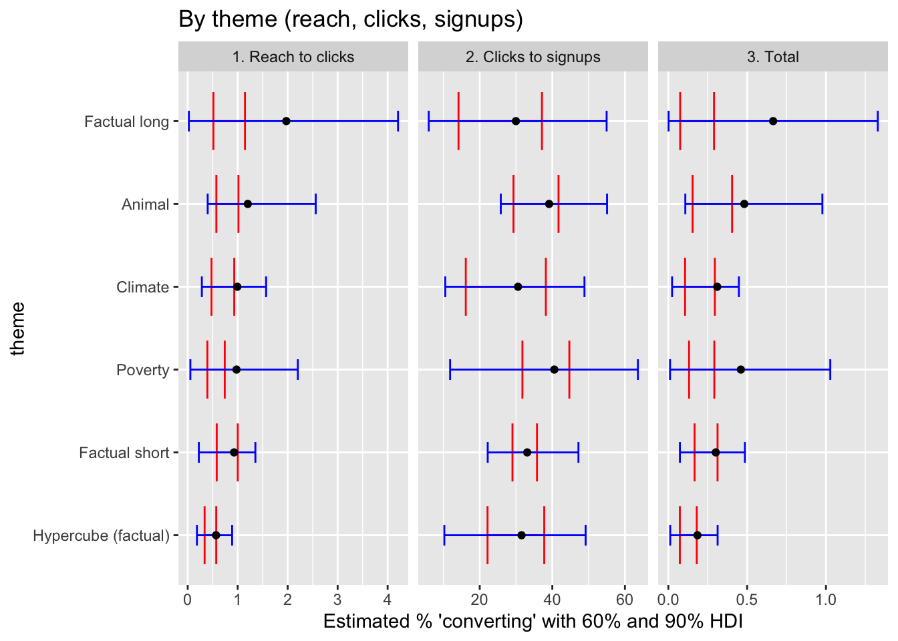
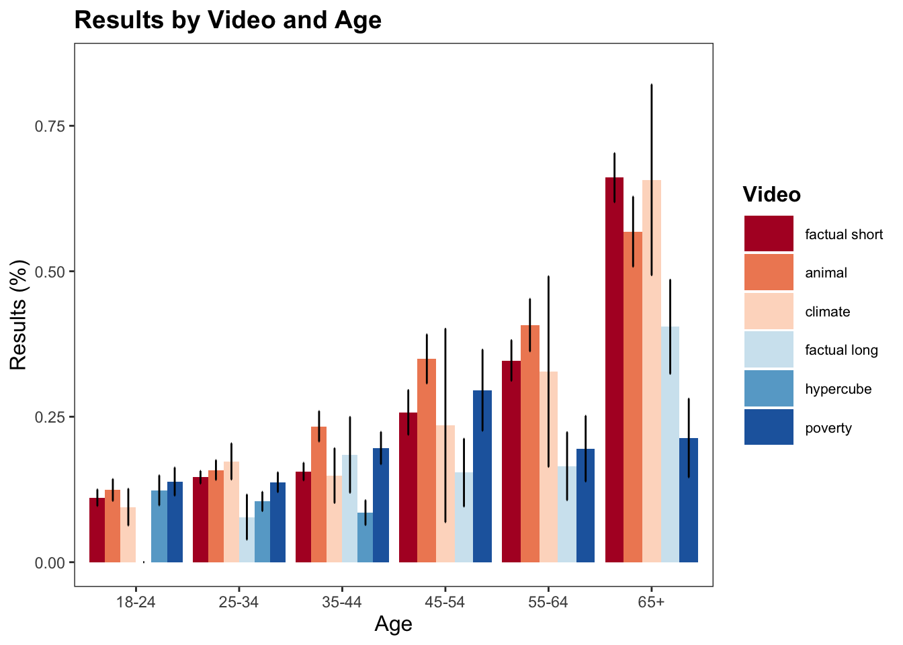
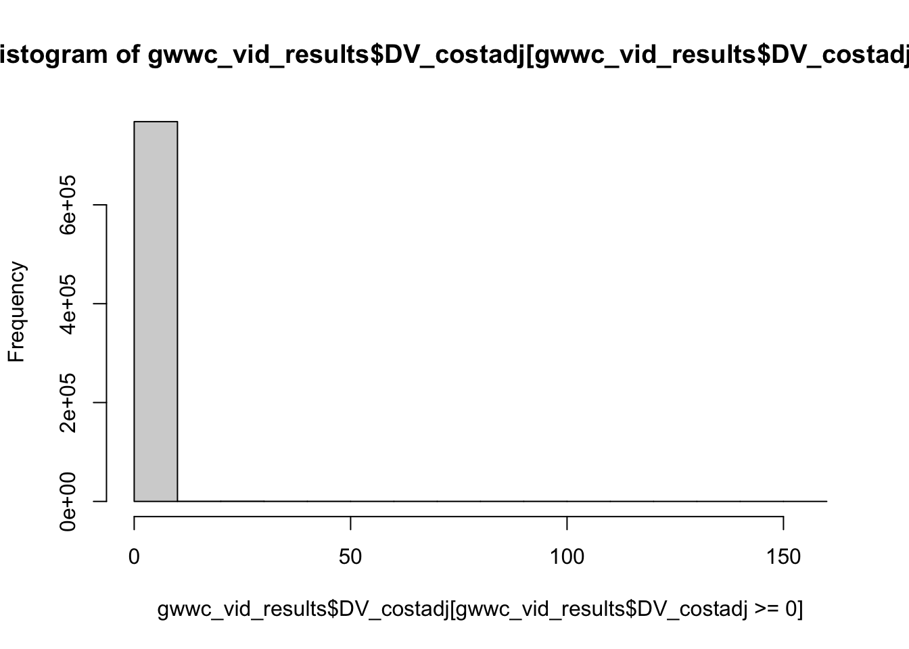

Code
knitr::include_url("https://effective-giving-marketing.gitbook.io/untitled/partner-organizations-and-trials/gwwc/giving-guides-+") Note: this presentation should align with a (forthcoming) EA Forum post, which will be linked here (and vice-versa).
See full description in the gitbook here.
Context: Facebook advertisements on a range of audiences
Effective Giving Guide Lead Generation campaign … ran late November 2021 - January 2022. The objective of this campaign was to see whether a factual [‘who researches giving’, ‘magnitude of impact differences’] or cause-led approach was more cost-effective at getting people to fill out a form and give us their email in order to download our Effective Giving Guide.
There were two dimensions of treatment content:
Bigger difference next year: Want to make a bigger difference next year? Start with our Effective Giving Guide and learn how to make a remarkable impact just by carefully choosing the charities you give to.
100x impact: Did you know that the best charities can have a 100x greater impact? Download our free Effective Giving Guide for the best tips on doing the most good this holiday season.
6000 people: Giving What We Can has helped 6,000+ people make a bigger impact on the causes they care about most. Download our free guide and learn how you can do the same.
Cause list: Whether we’re moved by animal welfare, the climate crisis, or worldwide humanitarian efforts, our community is united by one thing: making the biggest impact we can. Make a bigger difference in the world through charitable giving. Start by downloading our Effective Giving Guide. You’ll learn how to approach charity research and smart giving. And be sure to share it with others who care about making a greater impact on the causes closest to their hearts.
Learn: Use our free guide to learn how to make a bigger impact on the causes you care about most.
Only 3% research: Only 3% of donors give based on charity effectiveness yet the best charities can be 100x more impactful. That’s incredible! Check out the Effective Giving Guide 2021. It’ll help you find the most impactful charities across a range of causes.
Overwhelming: It can be overwhelming with so many problems in the world. Fortunately, we can do a lot to help, if we give effectively. Check out the Effective Giving Guide 2021. It’ll help you find the most impactful charities across a range of causes.
Charity research facts short video (8 seconds): Only 3% of donors research charity effectiveness, yet the best charities can 100x your impact, learn how to give effectively
Charity research facts long video (22 seconds): Trivial things we search (shows someone searching how to do Gangnam style), things we should research (shows someone searching how to donate effectively), only 3% of donors research charity effectiveness, yet the best charities can 100x your impact, learn how to give effectively. Slower paced music compared to the short video and cause videos.
Climate change (15 seconds): Care about climate change? You don’t have to renounce all your possessions, But you could give to effective environmental charities, Learn how to maximize your charitable impact, Download the Effective Giving Guide
Animal welfare (16 seconds): Care about animals? You don’t have to adopt 100 cats, But you could give to effective animal charities, Learn how to maximize your charitable impact, Download the Effective Giving Guide
Poverty (16 seconds): Want to help reduce global poverty? You don’t have to build a village, But you could give to effective global development charities, Learn how to maximize your charitable impact, Download the Effective Giving Guide
“In the original version of our test, we had 1 video for the factual appeal and 3 videos for the cause led approach - 1 for global health and development, 1 for animal welfare and 1 for climate change.”
“We targeted our ads to audiences we thought were likely to engage based on their interests and demographics, and targeted the cause led videos to a relevant audience, i.e. climate change message to climate change audience.”
“We also had various text above the videos that were displayed and optimized.”
Details in Gitbook HERE (and embedded below) and Gdoc here
knitr::include_url("https://effective-giving-marketing.gitbook.io/untitled/partner-organizations-and-trials/gwwc/giving-guides-+") The treatment assignment was determined by Facebook’s algorithm. Video content was manipulated across three split tests. Test 1 (Nov 30, 2021 – Dec 8, 2021) displayed either the long factual video or a cause focus video. In the cause focus condition, cause-specific audiences for animal rights, climate change, and poverty (based on their behavior on Facebook) were shown the relevant cause video.
Test 2 (add dates) was the same as Test 1 but used the short factual video instead of the cause-focus videos.
Test 3 (add dates) was the same as Test 2 but had a new version of the videos (with Luke just holding up signs with the words). This test was also restricted to 18-35 year olds.
Test 4: The Hypercube video was displayed in a separate “Hypercube” campaign which was tested against another campaign that allowed the algorithm to optimize between the short factual and cause focus videos (although not allowing each cause specific audience to see the ads for other cause areas).
In all tests, the text content displayed above the video was determined by Facebook’s algorithm. Balance across variations was determined to equate budgets across split tests; otherwise, according to Facebook’s algorithm. All variation was done at the level of the impression.
The videos were adapted across the trials as we learned. First, we updated the factual video to be shorter for Trial 2, and then we tried videos of Luke holding up signs spelling out the voiceover in Trial 3 for all videos.
Update 10 Jun 2022: I am re-doing the ’bringing down and inputting of data.
See:
Accessing and bringing down simple results HERE
Most relevant breakdowns as pivot tables
We import this exported ‘pivot table’ gg_campaign_by_ad_by_text below.
15 Jun 2022 - Replacing with more detailed version: gg-campaign-by-ad-set-text-age-gender.csv
Each row represents a combination of1
campaign_name: When and and with what funds the ad was launched, I think (?)ad_set: An ad set can specifically tie an ad_name to an audience (I think)ad_name: Which video/media (or collection of optimized videos/media) was shown; note this is paired with ‘which audience’ in it’s label, as there were specific ‘global poverty’, ‘animal welfare’, ‘climate change’, ‘philanthropy’ and ‘retargeting’ audiences
ad_name seems to select from a different set of media for optimization depending on which ad_set it is in.2text: Which text was shown along with the videogg_campaign_by_ad_by_text <- read_csv(here("gwwc", "gg_raw_data_shareable", "gg_campaign_by_ad_by_text.csv"), show_col_types=FALSE) %>%
dplyr::select(-"Campaign name...4") %>% #duplicate column
as_tibble() %>%
janitor::clean_names() %>%
janitor::remove_empty() # removes empty rows and columns, here `unique_link_clicks`
attribution_setting <- gg_campaign_by_ad_by_text$attribution_setting %>% .[1]
reporting_starts <- gg_campaign_by_ad_by_text$reporting_starts %>% .[1]
reporting_ends <- gg_campaign_by_ad_by_text$reporting_ends %>% .[1]
gg_campaign_by_ad_by_text <- gg_campaign_by_ad_by_text %>%
dplyr::select(-attribution_setting, -reporting_starts, -reporting_ends) #take out columns with all the same
# renaming, relabeling etc
gg_campaign_by_ad_by_text <- gg_campaign_by_ad_by_text %>%
mutate(
campaign_name = str_replace(campaign_name_1, "Giving Guide 2021", "GG21")
) %>%
dplyr::select(campaign_name, everything(), -campaign_name_1)
# Shorter 'text treatment' column
gg_campaign_by_ad_by_text <- gg_campaign_by_ad_by_text %>%
mutate(
text_treat = case_when(
str_detect(text, "^Want to make a bigger difference next year?") ~ "Bigger difference",
str_detect(text, "^Did you know that the best charities can have a 100x greater impact?") ~ "100x impact",
str_detect(text, "^Giving What We Can has helped") ~ "6000+ people",
str_detect(text, "^Whether we’re moved by animal welfare, the climate crisis") ~ "Cause list",
str_detect(text, "^Use our free guide to learn") ~ "Learn",
str_detect(text, "^Only 3% of donors give based on charity effectiveness yet") ~ "Only 3% research",
str_detect(text, "^It can be overwhelming with so many problems") ~ "Overwhelming",
TRUE ~ ""
),
#campaign theme aggregation
campaign_theme = case_when(
str_detect(campaign_name, "Emotional") ~ "Cause-specific",
str_detect(campaign_name, "Factual") ~ "Factual-effectiveness-research",
str_detect(campaign_name, "Hypercube") ~ "Hypercube video",
str_detect(campaign_name, "PPCo ") ~ "'Optimized' Factual, Emotional- PPCo creatives",
TRUE ~ ""),
version = case_when(
str_detect(campaign_name, "V2") & str_detect(campaign_name, "Factual") ~ "V2 - factual shortened",
#Emotional ads remained the same for V1 and V2, and a second set of filmed ads were used for V3
#Factual ad was shortened for V2, and a second filmed ad was used for V3
str_detect(campaign_name, "V3") ~ "V3 - sometimes Luke",
str_detect(campaign_name, "Hypercube") ~ "Video/creatives",
str_detect(campaign_name, "PPCo ") ~ "Video/creatives",
TRUE ~ "V1"),
audience = case_when(
str_detect(ad_name, "Animal") ~ "Animal",
str_detect(ad_name, "Climate") ~ "Climate",
str_detect(ad_name, "Poverty") ~ "Global Poverty",
str_detect(ad_name, "Philanthropy") ~ "Philanthropy",
str_detect(ad_name, "Retargeting") ~ "Retargeting",
str_detect(ad_name, "Lookalikes") ~ "Lookalikes",
TRUE ~ "General audience"),
video_theme = case_when( # Cause category aggregation
str_detect(ad_name, "Animal") & str_detect(ad_name, "Emotional") ~ "Animal",
str_detect(ad_name, "Climate") & str_detect(ad_name, "Emotional") ~ "Climate",
str_detect(ad_name, "Poverty") & str_detect(ad_name, "Emotional") ~ "Poverty",
str_detect(ad_name, "Animated") ~ "Animated",
TRUE ~ "Factual or optimized mix")
)This data frame has one row per combination of ‘campaign, ad, and text’.
The actual original/raw data is collapsed (breakdowns) by demography and ad set, into 2 files:
video breakdown.csv
text breakdown.csv
That data is clearly not identifying individuals; it involves aggregates based on real or assumed characteristics … and, as the other data is derived from it, there is clearly nothing that needs to be hidden there.
We input the ‘actual raw data’ (the statistics in a minimal format) below.
raw_data_path <- list("gwwc", "gg_raw_data_shareable")
raw_gwwc_gg_vid <- read.csv(here(raw_data_path, "video breakdown.csv")) %>% as_tibble()
raw_gwwc_gg_text <- read.csv(here(raw_data_path, "text breakdown.csv")) %>% as_tibble()#raw_gwwc_gg_vid %>% group_by(Campaign.name) %>% summarise(impressions = sum(Impressions))Note: You must have access to the GWWC raw data to run this. This includes data that was constructed (with what code?) by expanding Facebook’s aggregate reporting.
The files:
textdata_dv_linkclicks.csv, videodata_dv_results.csv, textdata_dv_results.csv , and videodata_dv_linkclicks.csv
are gitignored because of size
source(here("gwwc", "giving_guides", "input_build_gwwc_gg_data_results.R"))
#source(here("gwwc", "giving_guides", "input_build_gwwc_gg_data_clicks.R"))The code above inputs and builds 2-4 related data frames (tibbles), which were constructed from the collapsed (aggregated) data by multiplying rows according to observation counts.3
gwwc_text_clicks: Observations of link clicks … by texts above video gwwc_vid_clicks: … by video content4
gwwc_text_results: Observations of emails provided … by texts above video gwwc_vid_results: … by video content
Note, this is not the same as the previous question because some audiences are more costly to target on Facebook.
Sub-questions
Do the message treatments ‘interact’ with the video treatments (i.e., are their synergies and better pairings)?
Do some videos lead to higher click rates?
Do some videos lead to higher watch rates?
Next, we define the ‘features of interest’ and the ‘controls’
#features and controls
#geog <- c("where_live_cat", "city_cat")
#key_demog <- c("ln_age", "not_male_cat", "student_cat", "race_cat", geog)
#key_demog_n <- c("age_d2sd", "not_male_cat", "student_cat", "race_cat", geog)##gwwc_vid_results$DV_costadj)
##gwwc_vid_results$DV)
##gwwc_vid_results$ave.cost.impr)Data summary
Below, a few data summary bits (from Erin). I commented most of it out and will redo it using an automated and formatted ‘key summary statistics’ package.
I may also present the data in a dashboard for self-service.
#datatable(gwwc_vid_results)gwwc_vid_results %>% group_by(Age) %>% summarise(n=n()) %>% .kable() %>% .kable_styling()| Age | n |
|---|---|
| 25-34 | 287,682 |
| 13-17 | 444 |
| 18-24 | 147,805 |
| 35-44 | 158,352 |
| 45-54 | 48,728 |
| 55-64 | 60,904 |
| 65+ | 66,198 |
gwwc_vid_results %>% group_by(Gender) %>% summarise(n=n()) %>% .kable() %>% .kable_styling()| Gender | n |
|---|---|
| female | 573,705 |
| male | 178,321 |
| unknown | 18,087 |
#print(gwwc_vid_results %>% group_by(Gender,Age) %>% summarise(n=n(),cost=mean(ave.cost.impr)),n=40)
#print(gwwc_vid_results %>% group_by(Ad.Set.Name) %>% summarise(n=n(),cost=mean(ave.cost.impr)),n=41)
#print(gwwc_vid_results %>% group_by(Campaign.name,Ad.Set.Name) %>% summarise(n=n(),cost=mean(ave.cost.impr)),n=100)
gwwc_vid_results %>% group_by(audience) %>% summarise(n=n(), cost=mean(ave.cost.impr)*100) %>% .kable(digits=2, caption="Average cost per impression (in pennies)") %>% .kable_styling()| audience | n | cost |
|---|---|---|
| philanthropy | 248,852 | 2.20 |
| animal | 187,212 | 2.22 |
| climate | 139,824 | 1.81 |
| general | 57,012 | 1.30 |
| lookalike | 67,359 | 2.66 |
| poverty | 69,404 | 1.82 |
| retargeting | 450 | 2.50 |
gwwc_vid_results %>% group_by(message) %>% summarise(n=n(),cost=mean(ave.cost.impr)*100) %>% .kable(digits=2, caption="Average cost per impression (in pennies)") %>% .kable_styling()| message | n | cost |
|---|---|---|
| Factual | 291,027 | 2.24 |
| Emotional | 274,718 | 2.37 |
| Hypercube | 75,790 | 1.76 |
| PPCo | 128,578 | 1.25 |
### CHART DATA
#print(gwwc_vid_results %>% group_by(audience,media) %>% #summarise(results=mean(DV)*100,SE=std.error(DV)*100,n=n(),cost=mean(ave.cost.impr),CPR=cost/results),n=50)#Plot options in common
limits <- aes(ymax = mean_dv + (se_dv), ymin = mean_dv - (se_dv))
dodge <- position_dodge(width = 0.9)
vid_types <-
c("factual short",
"animal",
"climate",
"factual long",
"hypercube",
"poverty")
gg_gg_options <- list(geom_bar(stat = 'identity', position=dodge),
geom_errorbar(limits, position=dodge, width=0.05),
jtools::theme_apa(),
theme(legend.position="none"),
geom_text(aes(label = paste("$",mean_dv %>% round(.,2)), y=5), position = position_dodge(.9), size=4, color="white"),
theme(text=element_text(size=10))
)
grpsumgg <- function(df, gvar, var) {
df %>%
group_by({{gvar}}) %>%
summarise(mean_dv = mean({{var}}, na.rm=TRUE),
se_dv = sd({{var}}, na.rm=TRUE)/sqrt(n()))
}gwwc_vid_results %>%
filter(ave.cost.impr > 0) %>%
group_by(media) %>%
summarise(
`Results per $ (adjusted)` = mean(DV_costadj),
SE = std.error(DV_costadj),
n = n()
) %>%
arrange(-`Results per $ (adjusted)`) %>%
.kable(digits = 3) %>%
.kable_styling()| media | Results per $ (adjusted) | SE | n |
|---|---|---|---|
| climate | 0.118 | 0.016 | 38,663 |
| factual short | 0.117 | 0.005 | 331,197 |
| poverty | 0.117 | 0.009 | 113,608 |
| animal | 0.093 | 0.005 | 180,291 |
| hypercube | 0.062 | 0.007 | 75,785 |
| factual long | 0.037 | 0.006 | 30,356 |
gwwc_vid_results %>%
grpsumgg(media, DV_costadj) %>%
ggplot(aes(x=media, y=mean_dv)) +
gg_gg_options +
geom_bar(stat='identity',fill="#0072B2", position=dodge) +
ylab('Results/$ spent') +
xlab('Video') +
ggtitle('Results/$ spent by Video') +
scale_y_continuous(limits = c(0,.2), breaks=seq(0,.2, by=.05)) +
scale_x_discrete(labels=vid_types)
gwwc_vid_results %>% filter(ave.cost.impr > 0) %>%
group_by(media) %>%
summarise(
results = 100 * mean(DV),
SE = 100 * std.error(DV),
n = n()
) %>%
.kable(digits = 2) %>%
.kable_styling()| media | results | SE | n |
|---|---|---|---|
| factual short | 0.22 | 0.01 | 331,197 |
| animal | 0.25 | 0.01 | 180,291 |
| climate | 0.19 | 0.02 | 38,663 |
| factual long | 0.17 | 0.02 | 30,356 |
| hypercube | 0.10 | 0.01 | 75,785 |
| poverty | 0.17 | 0.01 | 113,608 |
gwwc_vid_results %>%
grpsumgg(media, DV) %>%
ggplot(aes(x=media, y=mean_dv)) +
geom_bar(stat='identity', fill="#0072B2",position=dodge) +
ylab('Results (%)')+
xlab('Video')+
ggtitle('Results by Video')+
scale_x_discrete(labels=vid_types)
Questions/Notes: Removed the retargeting audience
#print(gwwc_vid_results %>% filter(ave.cost.impr>0 & audience !="retargeting") %>% group_by(media,audience) %>% #summarise(results=mean(DV_costadj),SE=std.error(DV_costadj),n=n()),n=50) %>% .kable(digits=2)
gwwc_vid_results %>% filter(ave.cost.impr>0 & audience !="retargeting") %>%
group_by(media, audience) %>%
summarise(mean_dv = mean(DV_costadj, na.rm=TRUE),
se_dv = sd(DV_costadj, na.rm=TRUE)/sqrt(n())) %>%
ggplot(aes(x=audience, y=mean_dv, group=media, fill=media)) +
gg_gg_options +
labs(fill="Video")+
scale_fill_brewer(palette="RdBu")+
ylab('Results/$ spent')+
xlab('Audience')+
ggtitle('Results/$ spent by Video and Audience')+
theme_apa(legend.font.size = 8,legend.use.title = TRUE)+
scale_y_continuous(limits = c(0,.25), oob = rescale_none, breaks=seq(0,.75, by=.25)) +
scale_x_discrete(labels=c("philanthropy","animal","climate","general","lookalike","poverty","retargeting")) %>%
DT::datatable()Classes 'ScaleDiscretePosition', 'ScaleDiscrete', 'Scale', 'ggproto', 'gg' <ggproto object: Class ScaleDiscretePosition, ScaleDiscrete, Scale, gg>
aesthetics: x xmin xmax xend
axis_order: function
break_info: function
break_positions: function
breaks: waiver
call: call
clone: function
dimension: function
drop: TRUE
expand: waiver
get_breaks: function
get_breaks_minor: function
get_labels: function
get_limits: function
guide: waiver
is_discrete: function
is_empty: function
labels: philanthropy animal climate general lookalike poverty re ...
limits: NULL
make_sec_title: function
make_title: function
map: function
map_df: function
n.breaks.cache: NULL
na.translate: TRUE
na.value: NA
name: waiver
palette: function
palette.cache: NULL
position: bottom
range: <ggproto object: Class RangeDiscrete, Range, gg>
range: NULL
reset: function
train: function
super: <ggproto object: Class RangeDiscrete, Range, gg>
range_c: <ggproto object: Class RangeContinuous, Range, gg>
range: NULL
reset: function
train: function
super: <ggproto object: Class RangeContinuous, Range, gg>
rescale: function
reset: function
scale_name: position_d
train: function
train_df: function
transform: function
transform_df: function
super: <ggproto object: Class ScaleDiscretePosition, ScaleDiscrete, Scale, gg> Error in DT::datatable(.): 'data' must be 2-dimensional (e.g. data frame or matrix)#levels(gwwc_vid_results$audience)Questions/Notes: Removed the retargeting audience
gwwc_vid_results %>% filter(ave.cost.impr > 0 &
audience != "retargeting") %>% group_by(media, audience) %>% summarise(
results = 100 * mean(DV),
SE = 100 * std.error(DV),
n = n()
) %>% .kable(digits = 2) %>% .kable_styling()| media | audience | results | SE | n |
|---|---|---|---|---|
| factual short | philanthropy | 0.23 | 0.02 | 59,660 |
| factual short | animal | 0.20 | 0.01 | 90,832 |
| factual short | climate | 0.21 | 0.01 | 96,005 |
| factual short | general | 0.10 | 0.02 | 15,559 |
| factual short | lookalike | 0.39 | 0.03 | 34,207 |
| factual short | poverty | 0.21 | 0.02 | 34,815 |
| animal | philanthropy | 0.21 | 0.02 | 79,525 |
| animal | animal | 0.28 | 0.02 | 80,642 |
| animal | general | 0.14 | 0.04 | 10,542 |
| animal | lookalike | 0.42 | 0.07 | 9,441 |
| climate | philanthropy | 0.28 | 0.04 | 13,810 |
| climate | climate | 0.11 | 0.03 | 14,083 |
| climate | general | 0.16 | 0.05 | 7,445 |
| climate | lookalike | 0.21 | 0.08 | 3,283 |
| factual long | philanthropy | 0.16 | 0.05 | 6,923 |
| factual long | animal | 0.15 | 0.04 | 8,729 |
| factual long | climate | 0.19 | 0.04 | 9,542 |
| factual long | lookalike | 0.72 | 0.36 | 557 |
| factual long | poverty | 0.11 | 0.05 | 4,595 |
| hypercube | philanthropy | 0.14 | 0.03 | 17,400 |
| hypercube | animal | 0.07 | 0.03 | 6,988 |
| hypercube | climate | 0.09 | 0.02 | 20,154 |
| hypercube | general | 0.09 | 0.02 | 22,132 |
| hypercube | lookalike | 0.25 | 0.14 | 1,194 |
| hypercube | poverty | 0.08 | 0.03 | 7,835 |
| poverty | philanthropy | 0.15 | 0.01 | 71,466 |
| poverty | general | 0.08 | 0.08 | 1,327 |
| poverty | lookalike | 0.24 | 0.04 | 18,652 |
| poverty | poverty | 0.15 | 0.03 | 22,129 |
gwwc_vid_results %>% filter(ave.cost.impr>0 & audience !="retargeting") %>%
group_by(media, audience) %>%
summarise(mean_dv = 100*mean(DV, na.rm=TRUE),
se_dv = 100*sd(DV, na.rm=TRUE)/sqrt(n())) %>%
ggplot(aes(x=audience, y=mean_dv, group=media, fill=media)) +
gg_gg_options +
labs(fill="Video")+
scale_fill_brewer(palette="RdBu")+
ylab('Results (%)')+
xlab('Audience')+
ggtitle('Results by Video and Audience')+
theme_apa(legend.font.size = 8,legend.use.title = TRUE)+
scale_y_continuous(limits = c(0,1.1), oob = rescale_none, breaks=seq(0,1.1, by=.1)) +
scale_x_discrete(labels=c("philanthropy","animal","climate","general","lookalike","poverty","retargeting"))
#pirint(gwwc_vid_results %>% filter(ave.cost.impr>0 & audience !="retargeting") %>% group_by(audience) %>% summarise(results=mean(DV_costadj),SE=std.error(DV_costadj),n=n()),n=50)gwwc_vid_results %>% filter(ave.cost.impr>0 & audience !="retargeting") %>%
group_by(audience) %>%
summarise(mean_dv = mean(DV_costadj, na.rm=TRUE),
se_dv = sd(DV_costadj, na.rm=TRUE)/sqrt(n())) %>%
ggplot(aes(x=audience, y=mean_dv)) +
gg_gg_options +
ylab('Results/$ spent')+
xlab('Audience')+
ggtitle('Results/$ spent by Audience')+
scale_y_continuous(limits = c(0,.2), breaks=seq(0,.2, by=.05)) +
scale_x_discrete(labels=c("philanthropy","animal" ,"climate","general","lookalike","poverty"))
#print(gwwc_vid_results %>% filter(ave.cost.impr>0 & audience !="retargeting") %>% group_by(audience) %>% summarise(results=100*mean(DV),SE=100*std.error(DV),n=n()),n=50)
gwwc_vid_results %>% filter(ave.cost.impr>0 & audience !="retargeting") %>%
group_by(audience) %>%
summarise(mean_dv = 100*mean(DV, na.rm=TRUE),
se_dv = 100*sd(DV, na.rm=TRUE)/sqrt(n())) %>%
ggplot(aes(x=audience, y=mean_dv)) +
gg_gg_options +
ylab('Results (%)')+
xlab('Audience')+
ggtitle('Results by Audience')+
scale_y_continuous(limits = c(0,.4), breaks=seq(0,.4, by=.05)) +
scale_x_discrete(labels=c("philanthropy","animal" ,"climate","general","lookalike","poverty"))
Did not filter out the retargeting audience like i did for the other charts
gwwc_vid_results$Gender <- as.factor(gwwc_vid_results$Gender)
#levels(gwwc_vid_results$Gender)
class(gwwc_vid_results$Age)[1] "factor"gwwc_vid_results$Age <- relevel(gwwc_vid_results$Age, ref="18-24")
gwwc_vid_results$Age <- relevel(gwwc_vid_results$Age, ref="13-17")
#levels(gwwc_vid_results$Age)
#print(gwwc_vid_results %>% filter(ave.cost.impr>0) %>% group_by(Age,Gender) %>% summarise(results=mean(DV_costadj),SE=std.error(DV_costadj),n=n()),n=50)
gwwc_vid_results %>% filter(ave.cost.impr>0 & Age!="13-17") %>%
group_by(Age, Gender) %>%
summarise(mean_dv = mean(DV_costadj, na.rm=TRUE),
se_dv = sd(DV_costadj, na.rm=TRUE)/sqrt(n())) %>%
ggplot(aes(x=Age, y=mean_dv, group=Gender, fill=Gender)) +
gg_gg_options +
labs(fill="Gender")+
scale_fill_brewer(palette="Paired")+
ylab('Results/$ spent')+
xlab('Age')+
ggtitle('Results/$ spent by Age and Gender')+
theme_apa(legend.font.size = 8,legend.use.title = TRUE)+
scale_y_continuous(limits = c(0,.35), breaks=seq(0,.35, by=.1)) +
scale_x_discrete(labels=c("18-24","25-34","35-44","45-54","55-64","65+" ))
gwwc_vid_results$Gender <- as.factor(gwwc_vid_results$Gender)
#levels(gwwc_vid_results$Gender)
#class(gwwc_vid_results$Age)
gwwc_vid_results$Age <- relevel(gwwc_vid_results$Age, ref="18-24")
gwwc_vid_results$Age <- relevel(gwwc_vid_results$Age, ref="13-17")
#levels(gwwc_vid_results$Age)
#print(gwwc_vid_results %>% filter(ave.cost.impr>0) %>% group_by(Age,Gender) %>% summarise(results=100*mean(DV),SE=std.error(100*DV),n=n()),n=50)
gwwc_vid_results %>% filter(ave.cost.impr>0 & Age!="13-17") %>%
group_by(Age, Gender) %>%
summarise(mean_dv = 100*mean(DV, na.rm=TRUE),
se_dv = 100*sd(DV, na.rm=TRUE)/sqrt(n())) %>%
ggplot(aes(x=Age, y=mean_dv, group=Gender, fill=Gender)) +
gg_gg_options +
labs(fill="Gender")+
scale_fill_brewer(palette="Paired")+
ylab('Results (%)')+
xlab('Age')+
ggtitle('Results by Age and Gender')+
theme_apa(legend.font.size = 8,legend.use.title = TRUE)+
scale_y_continuous(limits = c(0,.75), breaks=seq(0,.75, by=.25)) +
scale_x_discrete(labels=c("18-24","25-34","35-44","45-54","55-64","65+" ))
class(gwwc_vid_results$Age)[1] "factor"gwwc_vid_results$Age <- relevel(gwwc_vid_results$Age, ref="18-24")
gwwc_vid_results$Age <- relevel(gwwc_vid_results$Age, ref="13-17")
levels(gwwc_vid_results$Age)[1] "13-17" "18-24" "25-34" "35-44" "45-54" "55-64" "65+" #print(gwwc_vid_results %>% filter(ave.cost.impr>0) %>% group_by(Age,media) %>% summarise(results=mean(DV_costadj),SE=std.error(DV_costadj),n=n()),n=50)
gwwc_vid_results %>% filter(ave.cost.impr>0 & Age!="13-17") %>%
group_by(media, Age) %>%
summarise(mean_dv = mean(DV_costadj, na.rm=TRUE),
se_dv = sd(DV_costadj, na.rm=TRUE)/sqrt(n())) %>%
ggplot(aes(x=Age, y=mean_dv, group=media, fill=media)) +
gg_gg_options +
labs(fill="Video")+
scale_fill_brewer(palette="RdBu")+
ylab('Results/$ spent')+
xlab('Age')+
ggtitle('Results/$ spent by Video and Age')+
theme_apa(legend.font.size = 8,legend.use.title = TRUE)+
scale_y_continuous(limits = c(0,.2), breaks=seq(0,.2, by=.05)) +
scale_x_discrete(labels=c("18-24","25-34","35-44","45-54","55-64","65+"))
class(gwwc_vid_results$Age)[1] "factor"gwwc_vid_results$Age <- relevel(gwwc_vid_results$Age, ref="18-24")
gwwc_vid_results$Age <- relevel(gwwc_vid_results$Age, ref="13-17")
#levels(gwwc_vid_results$Age)
gwwc_vid_results %>% filter(ave.cost.impr>0) %>% group_by(Age,media) %>% summarise(results=100*mean(DV),SE=100*std.error(DV),n=n()) %>%
.kable(digits=2) %>% .kable_styling()| Age | media | results | SE | n |
|---|---|---|---|---|
| 13-17 | factual short | 0.00 | 0.00 | 176 |
| 13-17 | animal | 0.00 | 0.00 | 101 |
| 13-17 | climate | 0.00 | 0.00 | 20 |
| 13-17 | factual long | 0.00 | NA | 1 |
| 13-17 | hypercube | 0.00 | 0.00 | 46 |
| 13-17 | poverty | 0.00 | 0.00 | 81 |
| 18-24 | factual short | 0.11 | 0.01 | 55,045 |
| 18-24 | animal | 0.12 | 0.02 | 35,453 |
| 18-24 | climate | 0.09 | 0.03 | 9,513 |
| 18-24 | factual long | 0.00 | 0.00 | 5,283 |
| 18-24 | hypercube | 0.12 | 0.03 | 18,632 |
| 18-24 | poverty | 0.14 | 0.02 | 23,823 |
| 25-34 | factual short | 0.15 | 0.01 | 124,020 |
| 25-34 | animal | 0.16 | 0.02 | 54,928 |
| 25-34 | climate | 0.17 | 0.03 | 17,904 |
| 25-34 | factual long | 0.08 | 0.04 | 5,161 |
| 25-34 | hypercube | 0.10 | 0.02 | 38,313 |
| 25-34 | poverty | 0.14 | 0.02 | 47,287 |
| 35-44 | factual short | 0.16 | 0.02 | 68,690 |
| 35-44 | animal | 0.23 | 0.03 | 34,263 |
| 35-44 | climate | 0.15 | 0.05 | 6,719 |
| 35-44 | factual long | 0.18 | 0.07 | 4,336 |
| 35-44 | hypercube | 0.09 | 0.02 | 18,794 |
| 35-44 | poverty | 0.20 | 0.03 | 25,492 |
| 45-54 | factual short | 0.26 | 0.04 | 17,482 |
| 45-54 | animal | 0.35 | 0.04 | 19,751 |
| 45-54 | climate | 0.24 | 0.17 | 851 |
| 45-54 | factual long | 0.15 | 0.06 | 4,548 |
| 45-54 | poverty | 0.30 | 0.07 | 6,090 |
| 55-64 | factual short | 0.35 | 0.03 | 28,557 |
| 55-64 | animal | 0.41 | 0.04 | 20,126 |
| 55-64 | climate | 0.33 | 0.16 | 1,221 |
| 55-64 | factual long | 0.17 | 0.06 | 4,848 |
| 55-64 | poverty | 0.20 | 0.06 | 6,150 |
| 65+ | factual short | 0.66 | 0.04 | 37,227 |
| 65+ | animal | 0.57 | 0.06 | 15,669 |
| 65+ | climate | 0.66 | 0.16 | 2,435 |
| 65+ | factual long | 0.40 | 0.08 | 6,179 |
| 65+ | poverty | 0.21 | 0.07 | 4,685 |
gwwc_vid_results %>% filter(ave.cost.impr>0 & Age !="13-17") %>%
group_by(media, Age) %>%
summarise(mean_dv = 100*mean(DV, na.rm=TRUE),
se_dv = 100*sd(DV, na.rm=TRUE)/sqrt(n())) %>%
ggplot(aes(x=Age, y=mean_dv, group=media, fill=media)) +
gg_gg_options +
labs(fill="Video")+
scale_fill_brewer(palette="RdBu")+
ylab('Results (%)')+
xlab('Age')+
ggtitle('Results by Video and Age')+
theme_apa(legend.font.size = 8,legend.use.title = TRUE)+
scale_y_continuous(limits = c(0,.85), breaks=seq(0,.85, by=.25)) +
scale_x_discrete(labels=c("18-24","25-34","35-44","45-54","55-64","65+"))
#lm(data = gwwc_vid_results, DV~Gender*Age+ave.cost.impr)
#lm(data = gwwc_vid_results,DV~Gender*Age))just demographics, not control
#data = lm(gwwc_vid_results,DV~Gender+Age)just demographic, controlling for cost
#lm(gwwc_vid_results,DV~Gender+Age+ave.cost.impr)means and standard errors for age groups/gender
gwwc_vid_results %>% group_by(Gender,Age) %>% summarise(results=mean(DV)*100,SE=std.error(DV)*100,n=n(),cost=mean(ave.cost.impr),CPR=cost/results) %>%
.kable() %>% .kable_styling()| Gender | Age | results | SE | n | cost | CPR |
|---|---|---|---|---|---|---|
| female | 13-17 | 0.0000000 | 0.0000000 | 227 | 0.0213216 | Inf |
| female | 18-24 | 0.1131850 | 0.0106890 | 98,953 | 0.0128517 | 0.1135455 |
| female | 25-34 | 0.1501864 | 0.0084290 | 211,071 | 0.0144178 | 0.0959994 |
| female | 35-44 | 0.1706107 | 0.0118197 | 121,915 | 0.0174212 | 0.1021111 |
| female | 45-54 | 0.3088937 | 0.0275859 | 40,467 | 0.0325183 | 0.1052736 |
| female | 55-64 | 0.3507014 | 0.0264643 | 49,900 | 0.0397964 | 0.1134766 |
| female | 65+ | 0.6292504 | 0.0349566 | 51,172 | 0.0582582 | 0.0925835 |
| male | 13-17 | 0.0000000 | 0.0000000 | 145 | 0.0167586 | Inf |
| male | 18-24 | 0.1201623 | 0.0164958 | 44,107 | 0.0115342 | 0.0959887 |
| male | 25-34 | 0.1194676 | 0.0129504 | 71,149 | 0.0127057 | 0.1063529 |
| male | 35-44 | 0.1802793 | 0.0234496 | 32,727 | 0.0152608 | 0.0846508 |
| male | 45-54 | 0.1401738 | 0.0442989 | 7,134 | 0.0275820 | 0.1967700 |
| male | 55-64 | 0.2585048 | 0.0516368 | 9,671 | 0.0311354 | 0.1204440 |
| male | 65+ | 0.4182850 | 0.0557807 | 13,388 | 0.0390365 | 0.0933250 |
| unknown | 13-17 | 0.0000000 | 0.0000000 | 72 | 0.0118056 | Inf |
| unknown | 18-24 | 0.1053741 | 0.0471048 | 4,745 | 0.0123688 | 0.1173800 |
| unknown | 25-34 | 0.1098499 | 0.0448255 | 5,462 | 0.0138191 | 0.1258000 |
| unknown | 35-44 | 0.1078167 | 0.0538865 | 3,710 | 0.0142102 | 0.1318000 |
| unknown | 45-54 | 0.5323869 | 0.2168629 | 1,127 | 0.0241792 | 0.0454167 |
| unknown | 55-64 | 0.3750938 | 0.1674950 | 1,333 | 0.0301575 | 0.0804000 |
| unknown | 65+ | 0.4884005 | 0.1723061 | 1,638 | 0.0372466 | 0.0762625 |
hist(gwwc_vid_results$DV_costadj[gwwc_vid_results$DV_costadj>0])
hist(gwwc_vid_results$DV_costadj[gwwc_vid_results$DV_costadj>=0])
#lm(gwwc_vid_results,DV~Gender+Age+ave.cost.impr)
#lm(gwwc_vid_results, DV_costadj~Gender+Age)main effects
#lm(gwwc_vid_results,DV~Gender+Age+ave.cost.impr+audience)NEW DV
#lm(gwwc_vid_results,DV_costadj~Gender+Age+audience)
#interactions
#lm(gwwc_vid_results,DV~Gender*audience+ave.cost.impr+Age)
## NEW DV
#lm(gwwc_vid_results,DV_costadj~Gender*audience+Age)
#lm(gwwc_vid_results,DV~Age*audience+ave.cost.impr+Gender)
#means for audience
gwwc_vid_results %>%
group_by(audience) %>%
summarise(
results=mean(DV)*100,
SE=std.error(DV)*100,
n=n(),
cost=mean(ave.cost.impr),
CPR=cost/results) %>%
.kable %>%
.kable_styling()| audience | results | SE | n | cost | CPR |
|---|---|---|---|---|---|
| philanthropy | 0.1952968 | 0.0088502 | 248,852 | 0.0219596 | 0.1124424 |
| animal | 0.2286178 | 0.0110380 | 187,212 | 0.0222447 | 0.0973009 |
| climate | 0.1780810 | 0.0112754 | 139,824 | 0.0181491 | 0.1019149 |
| general | 0.1122571 | 0.0140244 | 57,012 | 0.0129917 | 0.1157312 |
| lookalike | 0.3444232 | 0.0225737 | 67,359 | 0.0266180 | 0.0772828 |
| poverty | 0.1714599 | 0.0157043 | 69,404 | 0.0182429 | 0.1063975 |
| retargeting | 0.6666667 | 0.3840420 | 450 | 0.0250444 | 0.0375667 |
no controls
#lm(gwwc_vid_results,DV~message
#control for cost only
#lm(gwwc_vid_results,DV~message+ave.cost.impr)
#check results with campaign
#lm(gwwc_vid_results,DV~Campaign.name)
#check results with campaign and cost control
#lm(gwwc_vid_results,DV~Campaign.name+ave.cost.impr)with controls
#lm(gwwc_vid_results,DV~Gender+Age+ave.cost.impr+audience+message)
#interactions
#with audience
#lm(gwwc_vid_results,DV~message*audience+ave.cost.impr+Age+Gender)
#with Gender
#lm(gwwc_vid_results,DV~message*Gender+ave.cost.impr+Age+audience)
#with Age (emotional much worse with ages 65+)
#lm(gwwc_vid_results,DV~message*Age+ave.cost.impr+Age+audience)interaction with age and campaign restriction
#lm(gwwc_vid_results,DV~message*agetrin+message*restriction18_39+ave.cost.impr+Age+Gender)
#lm(gwwc_vid_results,DV~message*agetrin+message*restriction18_39+ave.cost.impr)in just early campaigns
#lm(subset(data,restriction18_39==0),DV~message*agetrin+ave.cost.impr)no controls
#lm(gwwc_vid_results,DV~media)means and SEs
gwwc_vid_results %>% group_by(media) %>% summarise(results=mean(DV)*100,SE=std.error(DV)*100,n=n(),cost=mean(ave.cost.impr),CPR=cost/results)# A tibble: 6 × 6
media results SE n cost CPR
<fct> <dbl> <dbl> <int> <dbl> <dbl>
1 factual short 0.223 0.00820 331287 0.0186 0.0834
2 animal 0.250 0.0118 180327 0.0274 0.110
3 climate 0.186 0.0219 38703 0.0160 0.0862
4 factual long 0.171 0.0237 30359 0.0378 0.221
5 hypercube 0.104 0.0117 75790 0.0176 0.169
6 poverty 0.165 0.0121 113647 0.0155 0.0939control for cost only
#lm(gwwc_vid_results,DV~media+ave.cost.impr)#lm(gwwc_vid_results,DV_costadj~media))####THIS IS GOODwith controls
#lm(gwwc_vid_results,DV~Gender+Age+ave.cost.impr+audience+media)#lm(gwwc_vid_results,DV_costadj~Gender+Age+audience+media)interactions
#lm(gwwc_vid_results,DV~media*Age+media*Gender+media*audience+ave.cost.impr)
#lm(gwwc_vid_results,DV_costadj~media*Age+media*Gender+media*audience)
#lm(gwwc_vid_results,DV~media*Age+media*Gender+media*audience)
#lm(gwwc_vid_results,DV_costadj~Age+Gender+media*audience)with audience
#lm(gwwc_vid_results,DV~media*audience+ave.cost.impr+Age+Gender)means and SEs
gwwc_vid_results %>% group_by(audience,media) %>% summarise(results=mean(DV)*100,SE=std.error(DV)*100,n=n(),cost=mean(ave.cost.impr),CPR=cost/results) %>%
.kable() %>% .kable_styling()| audience | media | results | SE | n | cost | CPR |
|---|---|---|---|---|---|---|
| philanthropy | factual short | 0.2278935 | 0.0195196 | 59,677 | 0.0212306 | 0.0931603 |
| philanthropy | animal | 0.2124797 | 0.0163273 | 79,537 | 0.0287906 | 0.1354982 |
| philanthropy | climate | 0.2748644 | 0.0445292 | 13,825 | 0.0194358 | 0.0707105 |
| philanthropy | factual long | 0.1588907 | 0.0478727 | 6,923 | 0.0442424 | 0.2784455 |
| philanthropy | hypercube | 0.1436699 | 0.0287142 | 17,401 | 0.0165272 | 0.1150360 |
| philanthropy | poverty | 0.1496734 | 0.0144587 | 71,489 | 0.0146207 | 0.0976841 |
| animal | factual short | 0.2025473 | 0.0149169 | 90,843 | 0.0177818 | 0.0877908 |
| animal | animal | 0.2802197 | 0.0186139 | 80,651 | 0.0264827 | 0.0945071 |
| animal | factual long | 0.1489118 | 0.0412723 | 8,730 | 0.0331970 | 0.2229308 |
| animal | hypercube | 0.0715512 | 0.0319895 | 6,988 | 0.0176674 | 0.2469200 |
| climate | factual short | 0.2051549 | 0.0146018 | 96,025 | 0.0167376 | 0.0815853 |
| climate | climate | 0.1063830 | 0.0274543 | 14,100 | 0.0135738 | 0.1275933 |
| climate | factual long | 0.1886397 | 0.0444232 | 9,542 | 0.0362073 | 0.1919389 |
| climate | hypercube | 0.0942601 | 0.0216151 | 20,157 | 0.0195252 | 0.2071421 |
| general | factual short | 0.0963824 | 0.0248746 | 15,563 | 0.0096248 | 0.0998600 |
| general | animal | 0.1422880 | 0.0367142 | 10,542 | 0.0134842 | 0.0947667 |
| general | climate | 0.1611171 | 0.0464761 | 7,448 | 0.0100953 | 0.0626583 |
| general | hypercube | 0.0948852 | 0.0206963 | 22,132 | 0.0162078 | 0.1708143 |
| general | poverty | 0.0753580 | 0.0753580 | 1,327 | 0.0111831 | 0.1484000 |
| lookalike | factual short | 0.3886843 | 0.0336381 | 34,218 | 0.0254869 | 0.0655722 |
| lookalike | animal | 0.4234148 | 0.0668094 | 9,447 | 0.0398878 | 0.0942050 |
| lookalike | climate | 0.2129601 | 0.0804179 | 3,287 | 0.0257438 | 0.1208857 |
| lookalike | factual long | 0.7181329 | 0.3580964 | 557 | 0.0782406 | 0.1089500 |
| lookalike | hypercube | 0.2512563 | 0.1449412 | 1,194 | 0.0249665 | 0.0993667 |
| lookalike | poverty | 0.2412093 | 0.0359149 | 18,656 | 0.0206915 | 0.0857822 |
| poverty | factual short | 0.2124178 | 0.0246672 | 34,837 | 0.0185498 | 0.0873270 |
| poverty | factual long | 0.1088139 | 0.0486419 | 4,595 | 0.0349859 | 0.3215200 |
| poverty | hypercube | 0.0765697 | 0.0312495 | 7,836 | 0.0180028 | 0.2351167 |
| poverty | poverty | 0.1535960 | 0.0263218 | 22,136 | 0.0143694 | 0.0935529 |
| retargeting | factual short | 0.0000000 | 0.0000000 | 124 | 0.0254032 | Inf |
| retargeting | animal | 0.6666667 | 0.6666667 | 150 | 0.0304000 | 0.0456000 |
| retargeting | climate | 0.0000000 | 0.0000000 | 43 | 0.0200000 | Inf |
| retargeting | factual long | 8.3333333 | 8.3333333 | 12 | 0.0933333 | 0.0112000 |
| retargeting | hypercube | 0.0000000 | 0.0000000 | 82 | 0.0131707 | Inf |
| retargeting | poverty | 2.5641026 | 2.5641026 | 39 | 0.0128205 | 0.0050000 |
with Gender
#lm(gwwc_vid_results,DV~media*Gender+ave.cost.impr+Age+audience)means and SEs
gwwc_vid_results %>% group_by(Gender, media) %>% summarise(
results = mean(DV) * 100,
SE = std.error(DV) * 100,
n = n(),
cost = mean(ave.cost.impr),
CPR = cost / results
)interaction with age and campaign restriction - old people really hated factual long
#lm(gwwc_vid_results,DV~media*agetrin+media*restriction18_39+ave.cost.impr+Age+Gender))
#lm(gwwc_vid_results,DV~media*agetrin+media*restriction18_39+ave.cost.impr))in just early campaigns
#subset(gwwc_vid_results,restriction18_39==0),DV~media*agetrin+ave.cost.impr))means and SEs
gwwc_vid_results %>% filter(restriction18_39 == 0) %>% group_by(Age, media) %>% summarise(
results = mean(DV) * 100,
SE = std.error(DV) * 100,
n = n(),
cost = mean(ave.cost.impr),
CPR = cost / results
)regressions with interactions
#lm(gwwc_vid_results,DV_costadj~Gender*Age)) #no significant effectsregressions with no interactions just demographic, not control
#lm(gwwc_vid_results,DV_costadj~Gender+Age))means and standard errors for age groups/gender
print(gwwc_vid_results %>% group_by(Gender,Age) %>% summarise(results=mean(DV_costadj)*100,SE=std.error(DV_costadj)*100,n=n()),n=50) ##idk if the changes i made to this line make sense# A tibble: 21 × 5
# Groups: Gender [3]
Gender Age results SE n
<fct> <fct> <dbl> <dbl> <int>
1 female 13-17 NaN 0 227
2 female 18-24 NaN 0.927 98953
3 female 25-34 NaN 0.629 211071
4 female 35-44 NaN 0.728 121915
5 female 45-54 9.46 0.866 40467
6 female 55-64 8.86 0.686 49900
7 female 65+ 11.4 0.647 51172
8 male 13-17 NaN 0 145
9 male 18-24 NaN 1.54 44107
10 male 25-34 NaN 1.19 71149
11 male 35-44 NaN 1.62 32727
12 male 45-54 NaN 1.68 7134
13 male 55-64 8.65 1.78 9671
14 male 65+ NaN 1.63 13388
15 unknown 13-17 NaN 0 72
16 unknown 18-24 NaN 4.90 4745
17 unknown 25-34 NaN 3.64 5462
18 unknown 35-44 NaN 5.07 3710
19 unknown 45-54 NaN 9.58 1127
20 unknown 55-64 NaN 5.16 1333
21 unknown 65+ NaN 4.60 1638#gwwc_vid_results %>% lm(data = ., DV_costadj~Gender+Age+Video))main effects
#lm(gwwc_vid_results,DV_costadj~Gender+Age+audience))interactions
#lm(gwwc_vid_results,DV_costadj~Gender*audience+Age))
#lm(gwwc_vid_results,DV_costadj~Age*audience+Gender))means for audience
gwwc_vid_results %>% group_by(audience) %>%
summarise(
results = mean(DV_costadj) * 100,
SE = std.error(DV_costadj) * 100,
n = n()
)
#Why all NaN?no controls
#lm(gwwc_vid_results,DV_costadj~message))
#lm(gwwc_vid_results,DV~message+ave.cost.impr))check results with campaign
#lm(gwwc_vid_results,DV_costadj~Campaign.name))with controls
#lm(gwwc_vid_results,DV_costadj~Gender+Age+audience+message))interactions with audience
#lm(gwwc_vid_results,DV_costadj~message*audience+Age+Gender))with Gender
#lm(gwwc_vid_results,DV_costadj~message*Gender+Age+audience))with Age (emotional much worse with ages 65+)
#lm(gwwc_vid_results,DV_costadj~message*Age+Age+audience))interaction with age and campaign restriction
#lm(gwwc_vid_results,DV_costadj~message*agetrin+message*restriction18_39+Age+Gender))
#lm(gwwc_vid_results,DV_costadj~message*agetrin+message*restriction18_39))in just early campaigns
#lm(subset(gwwc_vid_results,restriction18_39==0),DV_costadj~message*agetrin))no controls
#lm(gwwc_vid_results,DV_costadj~media))means and SEs
gwwc_vid_results %>%
filter(ave.cost.impr > 0) %>% group_by(media) %>% summarise(
mean(DV_costadj),
results = mean(DV) * 100,
SE = std.error(DV) * 100,
n = n(),
cost = mean(ave.cost.impr),
CPR = cost / results,
RPC = results / cost
) ##idk how to do this line?# A tibble: 6 × 8
media `mean(DV_costadj)` results SE n cost CPR RPC
<fct> <dbl> <dbl> <dbl> <int> <dbl> <dbl> <dbl>
1 factual short 0.117 0.223 0.00820 331197 0.0186 0.0834 12.0
2 animal 0.0927 0.250 0.0118 180291 0.0275 0.110 9.11
3 climate 0.118 0.186 0.0219 38663 0.0161 0.0862 11.6
4 factual long 0.0366 0.171 0.0237 30356 0.0378 0.221 4.53
5 hypercube 0.0619 0.104 0.0117 75785 0.0176 0.169 5.92
6 poverty 0.117 0.165 0.0121 113608 0.0155 0.0939 10.7 with controls
#lm(gwwc_vid_results,DV_costadj~Gender+Age+audience+media))interactions
#lm(gwwc_vid_results,DV_costadj~media*Age+media*Gender+media*audience))with audience
#lm(gwwc_vid_results,DV_costadj~media*audience+Age+Gender))means and SEs
gwwc_vid_results %>% group_by(audience, media) %>% summarise(
results = mean(DV) * 100,
SE = std.error(DV) * 100,
n = n(),
cost = mean(ave.cost.impr),
CPR = cost / results
) ###skipped updatingwith Gender
#lm(gwwc_vid_results,DV_costadj~media*Gender+Age+audience))means and SEs
data %>% group_by(Gender,media) %>% summarise(results=mean(DV)*100,SE=std.error(DV)*100,n=n(),cost=mean(ave.cost.impr),CPR=cost/results) #####skipped updatingwith Age (emotional much worse with ages 65+)
don’t see the effect of emotional being much worse with ages 65+
#lm(gwwc_vid_results,DV_costadj~media*Age+Age+audience))
#means and SEs
#print(data %>% group_by(Age,media) %>% summarise(results=mean(DV)*100,SE=std.error(DV)*100,n=n(),cost=mean(ave.cost.impr),CPR=cost/results),n = 50) ###idk how to update this
#print(data %>% group_by(audience,Age,media) %>% summarise(results=mean(DV)*100,SE=std.error(DV)*100,n=n(),cost=mean(ave.cost.impr),CPR=cost/results),n = 500) ###idk how to update thisinteraction with age and campaign restriction - old people really hated factual long
#lm(gwwc_vid_results,DV_costadj~media*agetrin+media*restriction18_39+Age+Gender))
#lm(gwwc_vid_results,DV_costadj~media*agetrin+media*restriction18_39))in just early campaigns
#lm(gwwc_vid_results=subset(gwwc_vid_results,restriction18_39==0),DV_costadj~media*agetrin))means and SEs
gwwc_vid_results %>% filter(restriction18_39 == 0) %>% group_by(Age, media) %>% summarise(
results = mean(DV) * 100,
SE = std.error(DV) * 100,
n = n(),
cost = mean(ave.cost.impr),
CPR = cost / results
)However, for the Hypercube campaign these are further broken up; I am not sure how.↩︎
In particular, it seems that for the Giving Guide 2021 – PPCo Creatives the Emotional + Factual (Animated) draws from a different set of ads for (e.g.) Global Poverty + Lookalikes (18-39) versus Philanthropy + Lookalikes (18-39). I assume it draws from all causes for non-cause-linked audiences, but for the cause-linked audiences it draws only from the cause-of-interest, as well as the general ‘factual’ videos.↩︎
I am not sure where this was done.↩︎
I ignore the ‘click data’ results for now because I don’t think it is particularly meaningful.↩︎
Followup of interest: What do the ‘diminishing returns to scale’ look like here?↩︎
Check: is this the same as ‘which yields the highest rate of results, or is there a cost difference?’↩︎
Check: is this the same as ‘which yields the highest rate of results, or is there a cost difference?’↩︎
Moved from Erin’s work↩︎